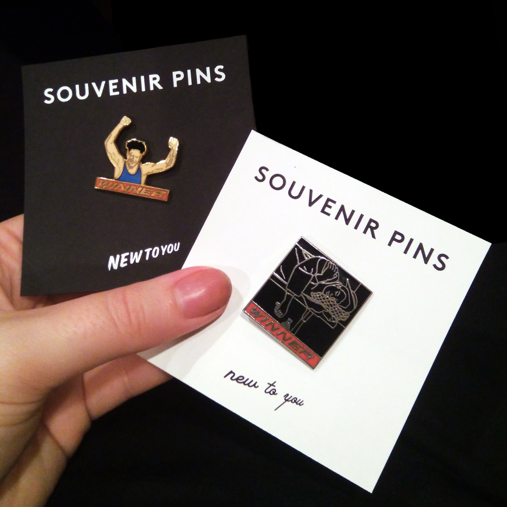

Question at hand and that implies the inherent need for this design solution to be relevant at all?
Today everyone from small artists to large retailers (like Sephora and Zara) are offering mass-produced enamel pins to consumers. Enamel pins remain ubiquitous and are an easy way for artists to make small wearable art or for brands to make wearable advertising. They are a great way to add character to a jacket or bag in a personalized way. SOUVENIR combines the business models of vintage resale and small press designers to deliver unique one-of-a-find products that are now out of production.
The Concept
While exploring my thesis project, I became fascinated with old and obsolete ephemera. My father had given me a baggie full of vintage pins that I would wear because of their zainy typography and pre-photoshop designs. I had the idea to start looking for more to sell, and since I couldn’t find anyone else who was doing so, I had to try it out. The vintage resale market is booming with small-time sellers looking to offer a more curated vintage shopping experience than large second-hand stores like Value Village. Online retail platforms like Etsy and Depop make it easy for beginners to start selling on the side. Since the market is easily penetrable and highly saturated, many times branding is an after-thought or non-existent for small-time sellers. As a designer, I knew I could strategically use branding to market my vintage business and target a broader demographic.
The Business Model
Supply
I source some of the pins—by good, old fashioned picking—in southern Ontario at flea markets, garage sales and estate sales. The rest I source from collectors online from which I purchase in bulk. This process requires many hours of research as many of them are international.
Customers
My business caters to vintage/antique lovers and fans of small-press design merchandise. Demographically this is 16-35 year-olds who love sustainable, vintage fashion and are nostalgic for their childhood.
Channels
The Brand
The name SOUVENIR is an embodiment of the nostalgic and reminiscent quality of the pins. They represent souvenirs of time rather than place. The main goal was to create a versatile brand that would contrast well with the large variety of one-of-a-find pins. I focused on the squareness of an Instagram grid which I knew would be my primary method for showing my collection online. The best way for me to catalogue the constantly-growing collection of hundreds of pins was to scan and edit them to a solid background, creating a uniformed documentation system. I drew inspiration from curated archival Instagram pages such as @fruit_stickers as a unique use of the grid and consistent content formatting.
Creating the card-backings to attach the pins to was going to be my main way to present the brand alongside the product to customers. In my first version, I mimicked the black square background of my instagram posts and translated it to black, square cardstock. The main logotype is a clean sans-serif that contrasts well with the zainy pin designs. I wanted to incorporate wacky flea-market-esque typography for the slogan—”new to you”—which appears in 6 alternating script and sign-writer typefaces. I would print, cut and white foil the cards myself.

In my second (current) version of card-backings, I wanted to use a standard shape that was easier for me to outsource production. This made white cardstock backings with standard business card dimensions more feasible. Now I can have 500+ cards printed and cut so that the only step I have to complete is the foiling, which I changed to gold. When selling at markets, I would often have people ask me if I made the pins myself, which I saw as a problem. To make the “vintage” aspect more apparent, I added “vintage pin” directly to the card backings.

What's Next
Since I have been a vendor at 17 pop-up markets between April-December of 2018, I am taking a break from markets until March 2019. I hope to focus more on wholesaling to local businesses as well as boosting my online presence. Eventually I hope to be doing the majority of my business online, at which point I will switch from Etsy to Shopify.